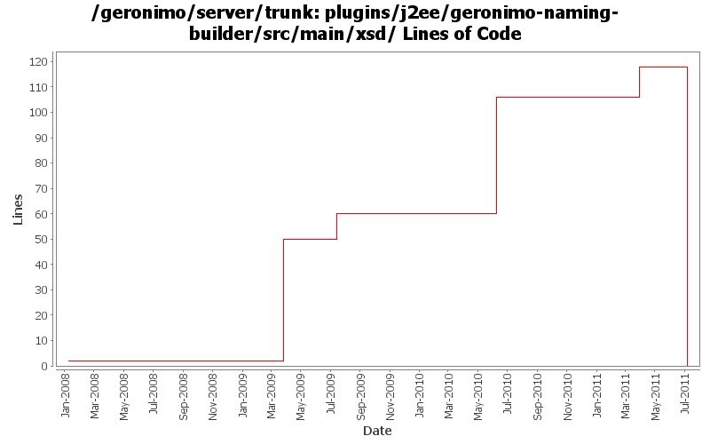

[root]/plugins/j2ee/geronimo-naming-builder/src/main/xsd

| Author | Changes | Lines of Code | Lines per Change |
|---|---|---|---|
| Totals | 10 (100.0%) | 142 (100.0%) | 14.2 |
| djencks | 4 (40.0%) | 94 (66.2%) | 23.5 |
| xuhaihong | 4 (40.0%) | 36 (25.4%) | 9.0 |
| gawor | 2 (20.0%) | 12 (8.5%) | 6.0 |
GERONIMO-6048 Move geronimo-naming.xsd to j2ee/geronimo-j2ee-schema module
0 lines of code changed in 1 file:
Seems we need to allow to use wsdl-file and port at the same time, as those security configurations are included in the port element.
11 lines of code changed in 1 file:
Move the wsdl-file as one of the choice, thinking since that the whole wsdl file is replaced, it makes no sense to have the function for updating part of its contents.
13 lines of code changed in 1 file:
GERONIMO-5884 Support wsdl-file override for web service client in vendor DD
12 lines of code changed in 1 file:
GERONIMO-5360 support binding References in jndi
46 lines of code changed in 1 file:
1) set arbitrary port properties for service-references in geronimo plan and 2) recognize wss4j properties to enable ws-security for service-references (using CXF provider). Based on patch/work of Rahul Mehta (GERONIMO-4642)
10 lines of code changed in 1 file:
GERONIMO-3954 allow overrides of env-entry values in geronimo plan
48 lines of code changed in 1 file:
update xsd:documentation with proper xsd namespaces and locations (GERONIMO-4075)
2 lines of code changed in 1 file:
GERONIMO-3738 Expose new compactPath (or, expose security vulns) jetty parameter
0 lines of code changed in 2 files: